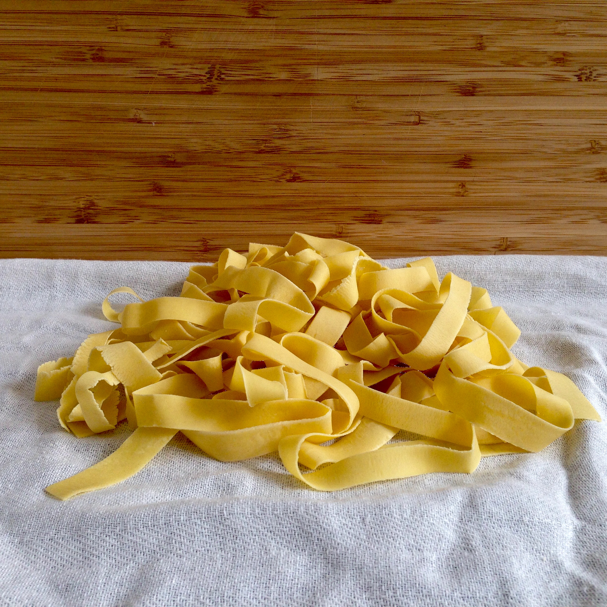

Home
Homemade Pasta Noodles!

Ingredients
- 1 large egg, beaten
- 2 tablespoons milk
- 1/2 teaspoon salt
- 1 cup sifted all-purpose flour
Steps
- Gather the ingredients
- Combine egg, milk, and salt in a bowl. Add sifted flour and stir until a dough forms, adding more flour as needed, a little at a time, for the dough to come together. Separate into two balls.
- Sprinkle a work surface with flour and roll out each piece of dough as thin as you like. Let rolled dough rest for 20 minutes.
- Cut into strips and spread to dry, dusting with a bit of flour so the noodles don't stick together. Let dry for approximately 2 hours.
- Cook noodles in boiling salted water, or hot soup, until tender, about 10 minutes.